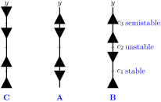

1.
Below are three phase lines for differential equations of the form \(\frac{dy}{dt} = f(y)\) and three graphs of functions \(f(y)\text{.}\)

(a)
Below each phase line, identify which graph---(A), (B), or (C)---the phase line corresponds to. No justification is necessary.
(b)
For the critical points \(c_1, c_2, c_3\) labeled on the rightmost phase line, determine whether the critical point corresponds to a stable, unstable, or semistable equilibrium solution. No justification is necessary.